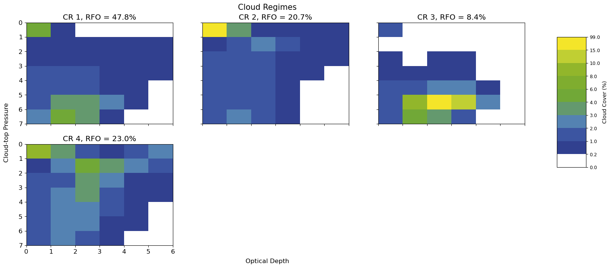
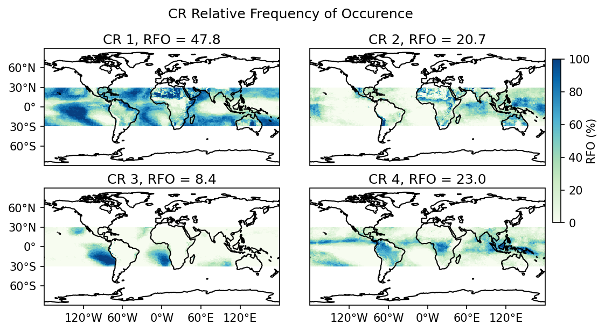

In this document we’ll take our premade cloud regimes and create plots of the cluster centers and spatial distributions. You’ll also learn how to extract data about a specific cloud regime. Ye, we’ve already made plenty of plots of cluster centers and spatial distributions, however this script does it differently. This script preforms NO CLUSTERING. It only takes a set of premade cloud regimes and then fits the data it is passed into them. This is MUCH faster than preforming the clustering again, and allows one to apply cloud regimes to sperate data. For example, we created CRs from ISCCP observation data in this tutorial. Using this script you could apply those CRs to data produced by models and the ISCCP simulator and examine them. Also at the end of the script you’ll learn how to use the outputs to further explore any other properties of your cloud regimes.
Wasserstein package is not installed so wasserstein distance cannot be used. Attempting to use wassertein distance will raise an error.
To use wasserstein distance please install the wasserstein package in your environment: https://pypi.org/project/Wasserstein/
Defining Variables
Here we define the variables necesary to begin using the toy ISCCP dataset included with this cookbook. To start off leave these variables alone, but later on feel free to experiment.
If running locally with your own dataset, you will need to change these to match your data.
# Path to data to clusterdata_path="./ISCCP_toy_data.nc"# Path to the directory you wish to save plots in if running as a script, if None plots will only be shown and not saved. Enter as Stringsave_path=Nonesave_prefix=None# prefix to put into the name of each plot to distinguish different runs of this script# Variable name of data to cluster in data_path# Name of tau dimension for var_name# Name of height/pressure dimension for var_namevar_name='n_pctaudist'tau_var_name='levtau'ht_var_name='levpc'lat_var_name='lat'lon_var_name='lon'# Does this dataset use cloud top height or cloud top pressure? enter "h" for height or "p" for pressureheight_or_pressure='p'# The premade cloud regimes to use. The script will then fit the histograms located in the files in data_path into these CRs.# Set this variable to a path to a numpy ndarray of premade cloud regimes of shape=(k, n_tau_bins * n_pressure_bins)premade_cloud_regimes="./toy_ISCCP_cluster_centers.npy"# Choose whether to use a euclidean or wasserstein distancewasserstein_or_euclidean="euclidean"# Minimum and Maximum longitudes and latitudes entered as list, or None for entire rangelat_range=[-90,90]lon_range=[-180,180]# Time Range min and max, or None for all time, entered as list of str: Ex. ["2003-03-01", "2004-07-01"] or ['2003','2007']time_range=None# Use data only over land or over ocean# Set to 'L' for land only, 'O' for ocean only, or False for both land and oceanonly_ocean_or_land=False# Does this dataset have a built in variable for land fraction? if so enter as a string, otherwise cartopy will be used to mask out land or waterland_frac_var_name=None# Logging level, set to "INFO" for information about what the code is doing, otherwise keep at "WARNING"logging_level='INFO'# Setting up loggerlgr.root.setLevel(logging_level)# Concatenating save_path and save prefixifsave_path!=None:save_path=save_path+save_prefix
Opening, Labeling and Plotting
Here we open our data, and assign each histogram to the nearest cluster. We store this information in an array named cluster_labels. After this we call plot_hists() to create plots of the CR centers, then we call plot_rfo() to create plots of the spatial distribution of each CR.
# Automatically setting k from the premade cloud regimesk=len(np.load(premade_cloud_regimes))# Setting k-means properteis to None since they arent used but still must be passedtol,max_iter,init,n_init,gpu=None,None,None,None,None# Opening data, and clusteringmat,cluster_labels,cluster_labels_temp,valid_indicies,ds=open_and_process(data_path,k,tol,max_iter,init,n_init,var_name,tau_var_name,ht_var_name,lat_var_name,lon_var_name,height_or_pressure,wasserstein_or_euclidean,premade_cloud_regimes,lat_range,lon_range,time_range,only_ocean_or_land,land_frac_var_name,cluster=True,gpu=gpu)# Plotting histogramsplot_hists(cluster_labels,k,ds,ht_var_name,tau_var_name,valid_indicies,mat,cluster_labels_temp,height_or_pressure,save_path)# Plotting RFOplot_rfo(cluster_labels,k,ds,save_path)
INFO:root: Reshaping data to shape (n_histograms, n_tau_bins* n_pc_bins):
INFO:root: Reading data into memory:
INFO:root: Finished preprocessing:
INFO:root: Calculating cluster_labels for premade_cloud_regimes:
INFO:root: 1 seconds to calculate cluster_labels for premade_cloud_regimes:
<__array_function__ internals>:200: RuntimeWarning: invalid value encountered in cast


Further Analysis
This is all well and good, but this analysis only goes so far. It’s likely a user will want to do some sort of further analysis beyond looking at the spacial distributions of the CRs. In this section you will learn how to do this.
Described above, we create an array called cluster_labels that holds the cluster that each histogram belongs to. Here’s how to use it:
First lets re-open the dataset specified by the data_path variable, since all the variables other than the one stored in var_name are automatically removed.
The HGG product represents globally merged gridded data from all participating geostationary satellites and polar orbiters, reported on a 1. degree equal area grid every 3 hours. Data for each grid cell is selected from a hierarchy of satellite choices based on viewing angle. Empty grid cells are filled by diurnal interpolation within +/- 21 hours, daily interpolation within +/- 5 days, replication within 3 equal area grid cells poleward of 55 degrees, or weekly interpolation within +/- 2 weeks. Data reported include scene identification, cloud amounts, cloud type distribution, mean cloud properties, cloud type properties, surface properties, radiances and atmospheric profiles.
NOAA National Centers for Environmental Information (NCEI); Ken Knapp, Bill Hankins, Alisa Young, Anand Inamdar
creator_email :
ncdc.isccp.team@noaa.gov
creator_url :
http://www.ncei.noaa.gov
creator_type :
institution
creator_institution :
NOAA National Centers for Environmental Information (NCEI)
publisher_name :
NOAA National Centers for Environmental Information (NCEI)
publisher_email :
ncdc.isccp.team@noaa.gov
publisher_url :
http://www.ncei.noaa.gov
publisher_type :
institution
publisher_institution :
NOAA National Centers for Environmental Information (NCEI)
references :
'Please include a citation for this paper in addition to the dataset citation when using the dataset: Rossow, W.B. and R.A. Schiffer, 1999: Advances in understanding clouds from ISCCP. Bulletin of the American Meteorological Society, 80, 2261-2287. doi: http://dx.doi.org/10.1175/1520-0477(1999)080<2261:AIUCFI>2.0.CO;2','ISCCP CDR Climate Algorithm Theoretical Basis Document (C-ATBD)'
comment :
---------- TO RE-MAP EQUAL-AREA MAP TO EQUAL-ANGLE (SQUARE LON,LAT) MAP ---------- For display purposes, the ISCCP equal-area map may be converted to an equal-angle map using replication. The variables 'eqlat_index', 'sqlon_beg' and 'sqlon_end'are provided for this purpose. Each equal-area cell is replicated into a specific range of longitude cells in the equal-angle map. For example, to remap an equal-area array eqvar[41252] to an equal-angle array sqmap[360,180], each eqvar[i] should be replicated into the range of cells indicated by sqlon_beg[i] and sqlon_end[i], and the lat index eqlat_index[i]. Using Fortran notation the assignment is: sqmap[sqlon_beg[i]:sqlon_end[i], eqlat_index[i]] = eqvar[i]. ---------- TO CONVERT COUNT UNITS TO PHYSICAL UNITS ---------- When attribute conversion_table is present for any variable, the reported values of count units may be converted to physical quantities by using the specified conversion table variable as a look-up table whose index is count value 0-255. For example, temperature = tmptab(count), temperature_variance = tmpvar(count), pressure = pretab(count), reflectance = rfltab(count), optical_depth = tautab(count), ozone = ozntab(count), humidity = humtab(count), water_path = wpatab(count). ---------- DEFINITION OF CLOUD TYPES ---------- VIS/IR cloud types are defined by a histogram of cloud top pressure and cloud optical depth, for both liquid and ice clouds. IR cloud types are defined by a histogram of cloud top pressure. Identification labels for the 18 VIS/IR cloud types and the 3 IR cloud types are given in the 'cloud_type_label' and 'cloud_irtype_label' variables, which correspond to the order of the cloud type variable arrays. ---------- TO COMPUTE CLOUD TOP HEIGHT ---------- Cloud top height in meters may be computed by applying lapse rate to the difference between cloud top temperature and surface temperature. Given rlapse 6.5, the formula is: height_meters = (ts - tc) / rlapse * 1000.0. ---------- TO COMPUTE TOTAL IR BRIGHTNESS TEMPERATURE ---------- Using IR cloud/clear categories: n_ir_clear = n_total - n_ir_cloudy, and then total_ir_bt = ( (n_ir_cloudy * ir_ircloudy) + (n_ir_clear * ir_irclear) ) / n_total, where ir_ircloudy and ir_irclear are values of count units. The resulting total_ir_bt can be converted from count units to physical units using the tmptab conversion table. Using VIS/IR cloud/clear categories: n_clear = n_total - n_cloudy, and then total_ir_bt = ( (n_cloudy * ir_visircloudy)+ (n_clear * ir_visirclear) / n_total, where ir_visircloudy and ir_visirclear are values of count units. The resulting total_ir_bt can be converted from count units to physical units using the tmptab conversion table. ---------- TO COMPUTE TOTAL VIS RADIANCE ---------- Using IR cloud/clear categories: n_ir_clear = n_total - n_ir_cloudy, and then total_vis_radiance = ( (n_ir_cloudy * vis_ircloudy) + (n_ir_clear * vis_irclear) ) / n_total. Using VIS/IR cloud/clear categories: n_clear = n_total - n_cloudy, and then total_vis_radiance = ( (n_cloudy * vis_visircloudy)+ (n_clear * vis_visirclear) / n_total.
International Satellite Cloud Climatology Project 3-hourly Gridded Global data -- ISCCP HGG Basic
source :
The source for the ISCCP Basic data files are the original ISCCP files. ISCCP Basic represents a subset of variables from ISCCP that have been remapped to equal-angle, do not use table to store data, etc. in order to make the files CF compliant
date_issued :
2017-07-03T19:52:50Z
product_version :
v01r00 Basic
date_created :
2017-07-03T19:52:50Z
date_modified :
2017-07-03T19:52:50Z
date_metadata_modified :
2017-07-03T19:52:50Z
geospatial_lat_min :
-90.0
geospatial_lat_max :
90.0
geospatial_lat_resolution :
1.0
geospatial_lon_min :
0.0
geospatial_lon_max :
360.0
geospatial_lon_resolution :
1.0
geospatial_vertical_min :
10.0
geospatial_vertical_max :
1025.0
history :
Mon Jul 3 15:52:50 2017: ncatted -a units,lon_bounds,c,c,degrees_east -a comment,lon_bounds,c,c,longitude values at east and west bounds of the grid cell -a units,lat_bounds,c,c,degrees_north -a comment,lat_bounds,c,c,latitude values at north and south bounds of the gridcell -a units,pc_bounds,c,c,hPa -a comment,pc_bounds,c,c,Pressure values at bounds of the pressure bins -a units,tau_bounds,c,c,1 -a comment,tau_bounds,c,c,Optical depth values at bounds of the depth bins -a axis,lat,c,c,Y -a axis,lon,c,c,X -a geospatial_lat_min,global,m,f,-90 -a geospatial_lat_max,global,m,f,90 -a geospatial_lat_resolution,global,m,f,1 -a geospatial_lon_min,global,m,f,0 -a geospatial_lon_max,global,m,f,360 -a geospatial_lon_resolution,global,m,f,1 -a geospatial_vertical_min,global,m,f,10 -a geospatial_vertical_max,global,m,f,1025 -a units,satcodes,d,, -a units,satids,d,, -a units,satnames,d,, -a units,cloud_irtype_label,d,, -a units,cloud_type_label,d,, /snfs2/isccp-p/basic/intermediate//temp_file3.nc -O /snfs2/isccp-p/prd/basic/hgg/1983/ISCCP-Basic.HGG.0.GLOBAL.1983.07.01.0000.GPC.10KM.CS00.EA1.00.nc
Mon Jul 3 15:52:50 2017: ncatted -a conversion_table,,d,, -a title,global,a,c, Basic -a description,snoice,m,c,Mean snow/ice cover for the cell -a source,global,o,c,The source for the ISCCP Basic data files are the original ISCCP files. ISCCP Basic represents a subset of variables from ISCCP that have been remapped to equal-angle, do not use table to store data, etc. in order to make the files CF compliant -a product_version,global,m,c,v01r00 Basic -a date_issued,global,m,c,2017-07-03T19:52:50Z -a date_created,global,m,c,2017-07-03T19:52:50Z -a date_modified,global,m,c,2017-07-03T19:52:50Z -a date_metadata_modified,global,m,c,2017-07-03T19:52:50Z -a description,levpc,c,c,Coordinate variable for cloud frequency histograms -a description,levtau,c,c,Coordinate variable for cloud frequency histograms -a units,^cldamt,m,c,percent -a bounds,time,c,c,time_bounds -a valid_min,n_total,m,s,0 -a valid_max,n_total,m,s,32766 -a valid_min,snoice,m,b,0 -a valid_max,snoice,m,b,100 -a long_name,cldamt,m,c,Cloud amount -a long_name,cldamt_ir,m,c,Cloud amount (using IR data) -a long_name,cldamt_irmarg,m,c,Cloud amount uncertainty (using IR data) -a note,cldamt_irmarg,c,c,This is the ISCCP variable: n_irmarg_cloudy represented as a fraction. It represents the fraction of pixels that are colder than clear sky by a smaller amount than what is flagged in cldamt_ir and represents cloud amount uncertainty. -a long_name,cldamt_types,m,c,Cloud amount by cloud type -a long_name,cldamt_irtypes,m,c,Cloud amount by IR cloud type -a calendar,time,c,c,gregorian -a cell_methods,eqheight,c,c,area: mean -a cell_methods,pc,c,c,area: mean -a cell_methods,pc_ir,c,c,area: mean -a cell_methods,pc_pcdist,c,c,area: mean -a cell_methods,pc_type,c,c,area: mean -a cell_methods,^sigma,c,c,area: standard_deviation -a cell_methods,^tc,c,c,area: mean -a cell_methods,tau,c,c,area: mean -a cell_methods,tau_ir,c,c,area: mean -a cell_methods,tau_type,c,c,area: mean -a cell_methods,^wp,c,c,area: mean /snfs2/isccp-p/basic/intermediate//temp_file2.nc -O /snfs2/isccp-p/basic/intermediate//temp_file3.nc
Mon Jul 3 15:52:49 2017: ncks -a -4 -L 5 /snfs2/isccp-p/basic/intermediate//temp_file.nc -O /snfs2/isccp-p/basic/intermediate//temp_file2.nc
2017-06-14T13:35:34.000Z bhankins d1fill_weekly /snfs2/isccp-p/prd/wrkdirs/1983_07 1983 07 01 1983 07 31
2017-06-14T12:55:31.000Z bhankins d1fill_daily /snfs2/isccp-p/prd/wrkdirs/1983_07 1983 07 01 1983 07 31
2017-06-14T12:49:22.000Z bhankins d1fill_diurnal /snfs2/isccp-p/prd/wrkdirs/1983_07 1983 07 01 1983 07 31
2017-05-15T21:04:57.000Z kknapp d1prod /snfs2/isccp-p/prd/wrkdirs/1983_07 1983 07 01 1983 07 31
The optical depth - cloud top height joint histograms should be stored in ds under the variable entered as var_name, such that ds[var_name] opens the raw histogram data. For ISCCP, this data is in the shape (n_time, n_tau, n_pressures, n_lat, n_lon) where n_time, n_tau, n_pressures… are the number of times, tau bins, pressure bins etc that are present in the dataarray. Other data products will be roughly similar to this, but may have the dimesnions in a different order. cluster_labels is an array of integers in (almost) this same shape, but without n_tau and n_pressure dimensions. So in this case cluster labels is shape (n_time, n_lat, n_lon). The value of cluster_labels[specific_time, specific_lat, specific_lon] will be an integer ranging from 0 to k-1 that indicates which CR the histogram located at ds[var_name][specific_time,:,:, specific_lat, specific_lon] belongs to. This may be slightly confusing, but a value of 0 indicates this histogram belongs to CR1, a value of 1 indicates it belongs to CR2 and etc… This indexing works better for some operations in python, but if it truly displeases you, there is a very easy fix. After all of the pre-written function calls, simply add the line “cluster_labels += 1”, which will reindex the values to run from 1 through k, where each value is directly equal to the CR the corresponding histogram has been labeled as. It is also important to note that any histogram that conatains a NaN will not be assigned a cluster, and the value in cluster labels will also be NaN.
Now that we understand the structure of the cluster_labels array, lets go over how to use it. As can be seen above, our ds has two variables: n_pctaudist which holds the histogram data, and pc which holds the mean cloud-top pressure for cloudy pixels in each histogram. We will use the cluster labels array and the pc variable to calculate the mean cloud-top pressure for each CR. (Yes this could also be calculated from the raw histogram data, but here we use a seperate variable for illustration purposes)
Now, lets create a dataarray of the mean cloud-top pressures
pc=ds.pc
Then we can loop through each CR, and calculate the average cloud top pressure. We do this with the dataarray.where() function provided by xarray. This function (used on line 2 in the following cell) allows us to grab all the values of pc where cluster_labels is equal to a certain cluster, and maske out all the other values. We can then take the mean of this to get the mean cloud top pressure for a certain cluster.
This method can be extended to be used on any variable, not just caverage cloud top pressure. It is also possible to remove the for loop in the below cell, and preform this operation using only broadcasting and vectorization if one wishes.
# Looping through each clusterforcrinrange(k):# Grabbing the values of pc for histograms assigned to crpc_of_cr=pc.where(cluster_labels==cr)# Calculating the mean cloud top pressureaverage_cloud_top_pressure=np.nanmean(pc_of_cr)# Printing resultsprint(f"The average cloud top pressure of CR{cr+1} is {average_cloud_top_pressure} ")
The average cloud top pressure of CR1 is 649.7481079101562
The average cloud top pressure of CR2 is 424.6433410644531
The average cloud top pressure of CR3 is 710.9830322265625
The average cloud top pressure of CR4 is 435.35302734375